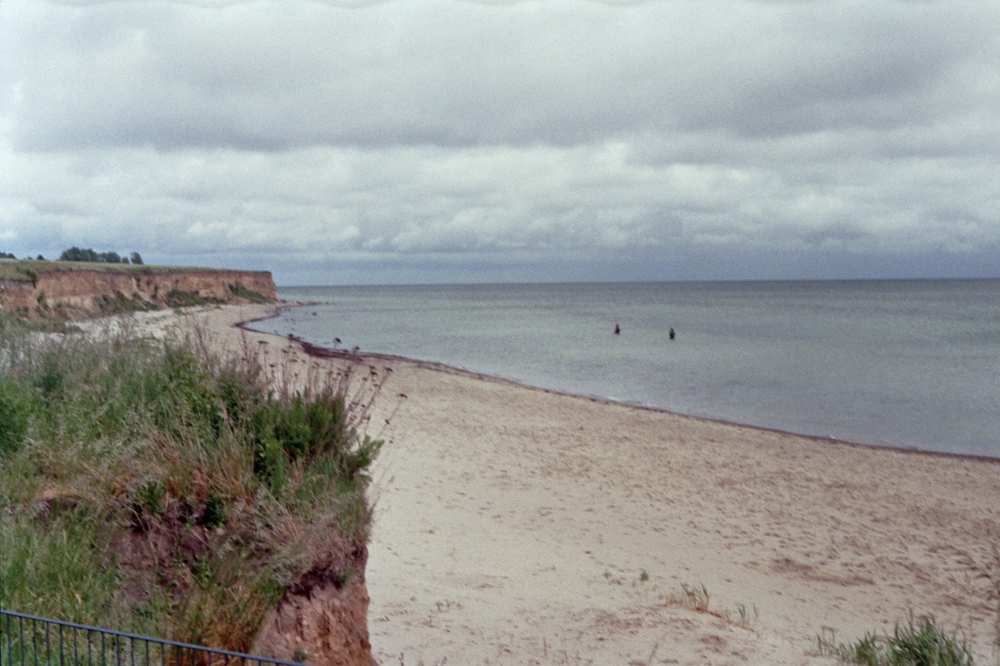
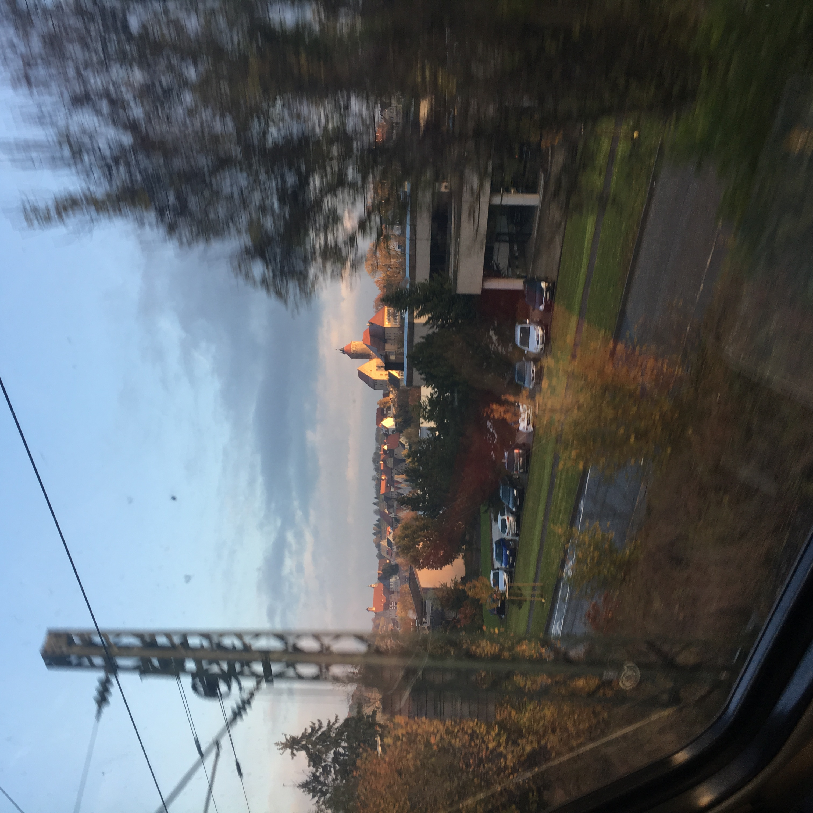

NOTE À PORTER
18.01.25 FALKEN IN MARRAKECH
Ich war ein Mal in dich verliebt, also werde ich es für immer sein.
24.10.24 DIE WELLEN BEI TAGESLICHT.
She wondered when she would ever not wonder whether he liked her enoguh for this to be her life?
23.04.24 ALDI IST MEIN WEINKELLER
Januar: Ein Glas Wein im Waschsalon
Februar: Paket für Nachbarn
März: Frostbeulen
April: Bock auf Twilight
Mai: Vorglühen auf Englisch
Juni: Prosecco im Feld
Juli: Nachts wach und nichts im Kühlschrank
August: Gras im Pflanzkasten
September: In love with the Postman
Oktober: Kaschmirpulli und Hangover
November: Pornhub und Eiscreme
Dezember: Fühlt sich an, wie frisch gemähtes Gras riecht.
26.01.24 REGEN AUF SYLT
It's funny how the last thing we ever did was kiss. Pull back, look up, turn around. Goodbye.
17.11.23 DIE LEUTE ESSEN ZU WENIG SOßE
The real, physical pain you feel behind your eyes when you’re about to cry. And the pain you feel that makes you cry, a non physical one but pain nonetheless.
22.06.23 GOLDEN TREES
We have to present a lot of faces to the world. When you get a relationship where you can drop all those faces that you have to show the world and paint a new face for each other. There is something beautiful in that.
11.11.22 POEMS
NEVER FOREVER
DISTANT ALIKE
ANTICIPATION ALWAYS IS
BUT NEVER ABOUT THE WHY
FAREWELL AND HELLO
WHEN DO WE GO AND WHERE
JUST SAW YOUR TEXT
I WAIT FOR YOU THERE
VOICES SOUND LIKE HOME
WE WILL NEVER GET OLD
MAYBE A LITTLE TIRED SOMETIMES
BUT ONLY TILL THE DARK
COLD AIR AND FLASHES SPARK
CAUGHT THE LAST TRAIN
ALMOST CAME TO CLOSE
TAKE MY HAND
BUT YOU CAN ALSO LET IT GO
07.08.22 DAS UNIVERSUM IM WEINGLAS
Das habe ich noch nie so gefühlt, sagte er. Nicht mal mit mir, denke ich und gehe beiläufig zu dicht an ihm vorbei zum Kühlschrank. Noch nie? Frage ich. Nicht so. Antwortet er. Wir wollen Freunde bleiben, klang es in meinem Kopf nach. Wir sind besser als Freunde, ich will unbedingt Freunde bleiben. Ich will Freunde bleiben. Ich will keine Freunde bleiben, ich will dich nackt sehen. Ich will keine Freunde sein. Ich will dich nackt sehen.
26.07.22 ALTE LIEBE, NEUER WEIN
Most of the stories in real life do not have a happy ending, so why should we strive for it? It will only be a disappointment in the end. We’re ok and I think sometimes it is enough to just be ok.
14.03.22 FRIENDS WITH BENEFITS OF THE DOUBT
Dich zu lieben ist wie am vorletzten Tag des Urlaubs endlich entspannt zu sein. Dich zu lieben ist wie auf dem Teil des Gehwegs zu sein, auf den die Sonnenstrahlen treffen. Dich zu lieben ist wie in die Tram in die falsche Richtung zu steigen. Dich zu lieben ist wie sich zu fragen, ob alle anderen nur so tun und auch die Kunst nicht verstehen. Dich zu lieben ist Mitte Juli einen kühlen Wind zu vergöttern, den man Mitte Dezember hassen würde. Dich zu lieben ist wie das Gefühl nach dem vierten Glas Wein zwischen Heiterkeit, Heimweh und unbändiger Lust auf Knutschen. Dich zu lieben ist wie ein Lieblingswort zu haben, nur um zu merken, dass man es immer weniger mag, umso häufiger man es sagt.
17.04.2021 COFFEE
If I can't touch the love I have inside me, I won't feel the love that is around me.
I'm sorry my confusion about what I want confused you about your worth.
I know you are scared, I'm scared too, but let's face love together, because I only want to feel it with you.
I will never be lost again, it took a while but found all the stars lead to you.
You're my Happy Hour, my coffee and sunshine, my hottie as in warm water bottle against pain and every other meaning. You're my favourite distraction and most of the time the only one I want to talk to.
26.05.2018 HOW DO I LOOK AWAY NOW THAT I HAVE SEEN YOU
He is not at war with me he is at war with himself and I’m in the middle of it.
Zeitrechnung wie im Geschichtsunterricht. Eine Zeit vor dir, eine Zeit mit Dir und eine Zeit nach dir. In der ich für immer leben muss.
Hast du mal überlegt wie unwahrscheinlich das mit uns überhaupt ist?
02.03.2018 NEVER
You've made it a bad thing for me now for even longer then it was a good thing.
07.08.2017 UNZUVERLÄSSIGE ERZÄHLERIN
Verpasste Chancen. Sich im Meeting freiwillig zu melden, um endlich mal zu punkten, aber es gibt auch so viel mehr zu tun. Dir endlich zu sagen, ich will mehr als Freundschaft, warum siehst du das denn nur nicht?! Tschüss zu sagen, für immer, vielleicht treffen wir uns an einem anderen Ort wieder. Aber an so etwas glaube ich nicht. Jedenfalls ist es schwer. Realistisch zu bleiben ist schwer, wenn ich doch so viel erreichen könnte, mit der Stiftkappe im Mund, den Bonus in Gedanken schon wieder investiert, für den ich noch keinen Finger krumm gemacht habe. Deine Lippen endlich für mich zu haben, obwohl ich dir morgens auf dem Gang kaum in die Augen schaue und lieber die Kaffeetasse umklammere. Noch ein Mal deine Hand zu drücken und dir eine gute Reise zu wünschen, obwohl ich dich im letzten Jahr nicht mal zum Geburtstag angerufen habe. Verpasste Chancen sind an jeder Ecke, der einen widme ich keinen Gedanken, der anderen hänge jeden Tag nach. Warum?
Éphémère

